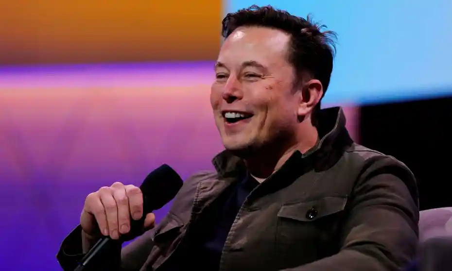

When something is important, you do it even if the odds are not in your
favor.

Biograpgy
Musk is a native of South Africa, born in 1971 to parents who later divorced.
His father was an engineer and his mother—originally from Canada—was a nutritionist.
Musk was fascinated by science fiction and computers in his adolescent years.
When he was twelve, he wrote the code for his own video game and actually sold it to a company.
In his late teens, he immigrated to Canada in order to avoid the required military service for white
males in South Africa.
It was still the era of apartheid, the South African legal system that denied political and economic
rights to the country's
majority-black native population. Musk was uninterested in serving in the army, which was engaged at the
time in a battle to
stamp out a black nationalist movement. Thanks to his mother's Canadian ties, he was able to enroll at
Queen's University in
Kingston, one of Ontario's top schools.
Musk had planned on a career in business, and he worked at a Canadian bank one
summer as a college intern. This was his only real job before he became an Internet
entrepreneur. Midway through his undergraduate education, he transferred to the University of
Pennsylvania,
where he earned a bachelor's degree in economics and a second bachelor's in physics a year later. From
there, he won admission
to the prestigious doctoral program at Stanford University in California, where he planned to
concentrate on a Ph.D. in energy
physics. He moved to California just as the Internet boom was starting in 1995, and he decided he wanted
to be in on it, too.
He dropped out of Stanford after just two days in order to start his first company, Zip2 Corporation.
This was an online city
guide aimed at the newspaper publishing business, and Musk was able to land contracts with both the New
York Times and the
Chicago Tribune to provide content for their new online sites.
Musk was just twenty-four when he started the company, and he devoted all of
his energies to see it succeed. At one point,
"Failure is an option here. If things are not failing, you are not innovating enough."
he lived in the same rented office that served as his company's headquarters, sleeping on a futon couch
and showering at the
local YMCA, which "was cheaper than renting an apartment," he explained in an interview with Roger Eglin
of the Sunday Times of
London. Still, the company struggled to fulfill its contracts and meet the payroll and other costs, and
he looked for outside
financing. Eventually a group of venture capitalists, investors who provide start-up money to new
businesses, financed Zip2
with $3.6 million, but he gave up majority control of the company in exchange.
Space Exploration Technologies Corp. (doing business as SpaceX) is an American aerospace
manufacturer,
a provider of space transportation services, and a communications corporation headquartered in
Hawthorne,
California. SpaceX was founded in 2002 by Elon Musk with the goal of reducing space transportation
costs to
enable the colonization of Mars. SpaceX manufactures the Falcon 9 and Falcon Heavy launch vehicles,
several
rocket engines, Cargo Dragon, crew spacecraft, and Starlink communications satellites.
SpaceX's achievements include the first privately funded liquid-propellant rocket to reach orbit
around Earth,
the first private company to successfully launch, orbit, and recover a spacecraft, the first private
company to
send a spacecraft to the International Space Station, the first vertical take-off and vertical
propulsive landing
for an orbital rocket, the first reuse of an orbital rocket, and the first private company to send
astronauts to
orbit and to the International Space Station. SpaceX has flown the Falcon 9 series of rockets over
one hundred times.
SpaceX is developing a satellite internet constellation named Starlink to provide commercial
internet service. In January
2020, the Starlink constellation became the largest satellite constellation ever launched. The
company is also developing
Starship, a privately funded, fully reusable, super heavy-lift launch system for interplanetary
spaceflight. Starship is
intended to become SpaceX's primary orbital vehicle once operational, supplanting the existing
Falcon 9, Falcon Heavy, and
Dragon fleet. Starship will have the highest payload capacity of any orbital rocket ever built on
its debut, scheduled for 2022.